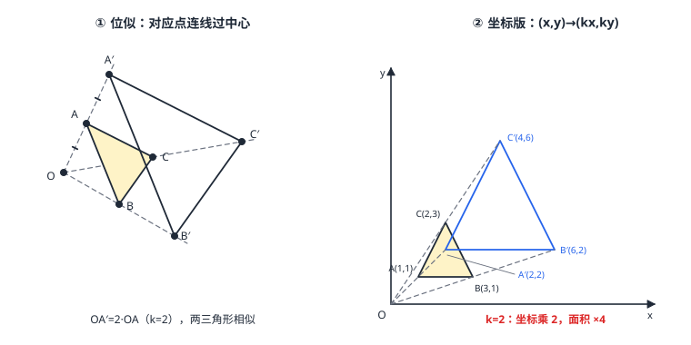

位似
位似是「带着放大机的相似」：取一个位似中心 O，把图形上每个点与 O 连线，沿连线方向按同一倍数 k 拉远或推近——新图形与原图形相似，且对应点连线全部穿过 O。k>0 同侧、k<0 异侧。放到坐标系里以原点为位似中心，规律极简洁：(x,y)\to(kx,ky)。作图靠「连线定方向、按比定距离」，计算靠坐标乘 k；面积按 k^2 变化。
| 所属主题 | 相似与投影 |
|---|---|
| 所属模块 | 几何 |
| 课标学段 | 第四学段（7~9 年级） |
| 前置知识 | 相似三角形的判定与性质、平面直角坐标系与函数 |
| 核心素养 | 几何直观推理能力运算能力 |
教材定位
人民教育出版社《人教版（2024版）义务教育教科书·数学》
九年级下册第31章 相似31.4 位似
对应九下 31.4：位似中心、位似比与坐标规律。
说明
位似图形的定义：两个多边形相似，且所有「对应点连线」交于同一点 O（位似中心）。从 O 到新图形对应点的距离与到原图形的距离之比 k 叫位似比。k>1 放大（同侧拉远）、0<k<1 缩小（同侧推近）、k<0 反向（图形翻到 O 另一侧，顺带旋转 180^\circ，图 1 左）。
位似与相似的关系：位似是相似的特例——位似图形必相似（相似比 =|k|），但相似的图形未必位似（对应点连线可能不交于一点）。位似给相似装上了「原点」和「发动机」：每个点沿着过中心的射线整齐移动。
坐标规律（以原点为位似中心）：图形上点 (x,y) 经位似变换后为 (kx,ky)（图 1 右）——横纵坐标同乘 k。这条规律把几何作图变成算术：放大 2 倍就是每个坐标乘 2；k=-\tfrac12 就是坐标取负再减半（先翻到对面、再缩小一半）。
面积与位似比：位似是相似，面积比 =k^2；周长比、对应线段比 =|k|。放大 3 倍的图纸，边长 3 倍、面积 9 倍——与 相似三角形的判定与性质 的性质完全一致，没有新账要记。
使用场景
幻灯机放映：灯泡（光源）就是位似中心，幻灯片上的图案沿光线拉远投到银幕——银幕上的像与片上图案位似，银幕离灯越远像越大（k 由距离比决定）。
缩放打印：设计稿从 A4 等比放大到 A3——以纸面中心（或任意选定的参考点）为位似中心，图案的每个笔画点按同一倍数移位，字号与图形同步缩放不变形。
注意点
位似中心不一定在图形外面：可以在图形内部（放大时图形向四周膨胀）、边上、甚至顶点上——判定位似只看「对应点连线是否共点」，不看 O 在哪。
k 的符号藏方向：k=2 与 k=-2 得到的图形大小相同、形状相同，但一个在 O 同侧、一个在异侧——题目给「位似比为 2」而不指明方向时，两解都要考虑（坐标系里 (kx,ky) 用 k=±2 各算一遍）。
坐标规律只对「原点为位似中心」生效：位似中心是 (a,b) 时规律是 (x,y)\to(a+k(x-a),\ b+k(y-b))——先平移到原点、缩放、再平移回去。直接把 (x,y) 乘 k 会把图形缩到错误的中心上。
证明

图 1：左——位似的定义：对应点连线都过位似中心 O，O 到新图形顶点与到原图形对应顶点的距离之比等于 k；右——坐标版：以原点为位似中心，每个顶点坐标乘 k，(x,y)→(kx,ky)，面积按 k² 变化
证明
结论 1位似图形一定相似：\triangle A'B'C' 与 \triangle ABC 位似于中心 O、位似比 k 时，对应边之比都是 k，对应角相等。
设 \triangle ABC 与 \triangle A'B'C' 位似于中心 O，位似比 k，A'、B' 在射线 OA、OB 上且 OA'=k\cdot OA、OB'=k\cdot OB。\triangle OAB 与 \triangle OA'B' 共享顶角 \angle AOB=\angle A'OB'（同一射线），两边成比例（\tfracOA'OA=\tfracOB'OB=k），SAS 相似（相似三角形的判定与性质）得 \triangle OAB\sim\triangle OA'B'，故 \tfracA'B'AB=k 且 \angle OAB=\angle OA'B'（A'B'\parallel AB）。三边同理全部成比例、三角对应相等——两个三角形相似。
关键一步依据是 SAS 相似判定（相似三角形的判定与性质）：A'、B' 在射线 OA、OB 上，所以 \angle AOB=\angle A'OB'（同一个顶角），且 \tfracOA'OA=\tfracOB'OB=k（夹这个角的两边成比例），角相等与边的比例同时成立，故 \triangle OA'B'\sim\triangle OAB，\tfracA'B'AB=k、\angle OAB=\angle OA'B' 随之得出。三个顶点的相似合起来整个图形相似——位似比直接就是相似比。
结论 2位似把每条边变成与原边平行的对应边，角度一个不变，形状只能整体伸缩。
第 1 步顺带证出 A'B'\parallel AB、B'C'\parallel BC——位似把每条边都平移成原边的平行线，角度一个不动，形状只能整体伸缩。这就是「复印机文化」的几何内核。
关键一步依据是上面顺带证出的 A'B'\parallel AB：由 \angle OAB=\angle OA'B' 且 OA、OA' 在同一直线上，同位角相等两直线平行（相交线与平行线），A'B' 与 AB 方向一致；其余各边同理。平行线之间的角由方向决定，方向不变角度就不变，所以位似是「复印机文化」的几何内核。
结论 3位似的坐标规律：以原点为位似中心时，点 P(x,y) 的对应点是 (kx,\ ky)；k<0 时落在反向延长线上，公式仍统一。
以原点 O(0,0) 为位似中心，点 P(x,y) 的对应点 P' 在射线 OP 上且 |OP'|=|k|\cdot|OP|。OP 的方向向量就是 (x,y) 本身，沿它拉长 k 倍得 (kx,\ ky)（k<0 时沿反向延长线，坐标取负乘 |k|，公式统一为 (kx,\ ky)）。多边形每个顶点各自如此，整体完成变换。
关键一步依据是「对应点与位似中心共线且长度按位似比放大」：P' 在射线 OP 上说明方向不变，|OP'|=|k|\cdot|OP| 说明长短按同一个倍数伸缩，而 P(x,y) 的两个坐标正是沿两条坐标轴方向的分量，方向不变、长度同倍变，两个分量就同时乘上 k。k<0 时落在反向延长线上，两个分量同时取负乘 |k|，写成 (kx,\ ky) 仍然统一。多边形的每个顶点各自如此，整体变换一次完成。
结论 4k<0 的位似带一次翻面：(x,y)\to(-mx,-my)，等于先放大 m 倍再关于原点对称。
k=-m（m>0）时 (x,y)\to(-mx,-my)——等于先乘 m 放大再关于原点对称（旋转 180^\circ，平移与旋转 的中心对称在坐标系里的形态）。位似比的正负号是「要不要翻面」的开关。
关键一步依据是坐标取负的几何含义：k=-m（m>0）时两个分量同时变号，点 (x,y) 落到原点另一侧关于原点对称的位置上，这正是中心对称（平移与旋转 的中心对称在坐标系里的形态），只不过先乘 m 放大。所以位似比的正负号不是记号细节，而是「翻不翻面」的开关：k>0 朝向不变，k<0 朝向相反。
动手实验
拿一张方格纸，左下角定一个点 O 当「放映机」，在纸中央画个小三角形。用直尺把 O 与三角形三个顶点连成射线并延长；用圆规在每个方向上量出原距离的 2 倍定下新顶点，连成新三角形——量对应边，全部是原来的 2 倍；面积数格子，正好 4 倍。再把 2 倍改成「反方向 1 倍」（k=-1），新图形跑到 O 的另一侧，与原图形关于 O 点对称。
解题思路
作图四步：定中心 → 连射线（原图形每个顶点与中心）→ 按比截距（k>1 延长、0<k<1 缩短、k<0 反向）→ 顺次连接新顶点。
坐标系计算：中心是原点，直接 (x,y)\to(kx,ky) 逐点写新坐标；中心不在原点，先「减中心、乘 k、加中心」三步走（例 2）。
双解意识：题目说「以原点为位似中心，位似比为 2」而不说方向 → k=2 与 k=-2 两组答案都要给出（例 3）。
按场景的例题
例 1（场景：图形设计） 卡通图案坐标放大
平面直角坐标系中，图案的一个关键三角形顶点为 A(1,1)、B(3,1)、C(2,3)。以原点为位似中心、位似比 k=2 放大。写出新三角形各顶点坐标，并求新三角形的面积。
解：坐标规律 (x,y)\to(2x,2y)：A'(2,2)、B'(6,2)、C'(4,6)。原三角形：底 AB=2、高 2（C 到 AB 的竖直距离 3-1=2），S=\tfrac12× 2× 2=2；面积比 =k^2=4，新面积 =8。（直接验算：A'B'=4、高 6-2=4，S=\tfrac12× 4× 4=8 ✓）
答：A'(2,2)、B'(6,2)、C'(4,6)；新三角形面积 8。
例 2（场景：生活优化） 招牌字样按锚点缩印
打印店要把招牌字样的定位三角形（顶点 A(2,3)、B(6,3)、C(4,6)）以固定锚点 P(2,1) 为位似中心、k=\tfrac12 缩小。求缩小后三个顶点坐标。
解：中心不在原点，三步走：减中心、乘 k、加中心。以 A(2,3) 为例：A-P=(0,2)，乘 \tfrac12 得 (0,1)，加回 P 得 (2,2)，故 A'(2,2)。同法：B-P=(4,2)\to(2,1)\to(4,2)，B'(4,2)；C-P=(2,5)\to(1,2.5)\to(3,3.5)，C'(3,3.5)。校核：A'P 距离 =1，AP 距离 =2，比值 \tfrac12 ✓。
答：A'(2,2)、B'(4,2)、C'(3,3.5)。
例 3（场景：竞技与游戏） 游戏地图双倍视野
游戏小地图上敌方阵地是一个三角形，顶点 A(1,2)、B(3,2)、C(2,4)，指挥界面要把阵地以原点为位似中心、位似比为 2 展示成「双倍视野图」。求所有可能的展示坐标，并说明两组结果的方位差别。
解：位似比 2 未指明方向，k=± 2 两组解。k=2：(x,y)\to(2x,2y)，A'(2,4)、B'(6,4)、C'(4,8)——阵地在原方位上放大两倍。k=-2：A''(-2,-4)、B''(-6,-4)、C''(-4,-8)——图形翻到原点对面（旋转 180^\circ），大小相同、方位相反。两组图形都与原图形位似，相似比均为 2。
答：k=2：(2,4)、(6,4)、(4,8)；k=-2：(-2,-4)、(-6,-4)、(-4,-8)——后者与前者关于原点对称。
常用推论
位似中心可以「顺手取好」：同一对图形关于不同中心的位似表示不同——但只要给定了中心和一对对应点，k=\tfracOP'OP 的分子分母就都定了；反过来，已知 k 与中心，任一点的新位置唯一。
k=-1 的位似就是中心对称：图形绕位似中心转 180^\circ——位似家族里藏着 轴对称与中心对称 的中心对称这个特例（旋转与位似的交叉点）。
相似图形都能「摆」成位似：任何两个相似图形，经过适当的平移与旋转后，对应点连线会交于一点——位似是相似的标准摆放姿态，这也是为什么坐标乘 k 在相似计算里到处好用的深层原因。
易错点
错以原点为位似中心、位似比为 2，点 (3,1) 变到 (3+2,1+2)=(5,3)。
为什么错位似是「乘」不是「加」：(x,y) 乘 k 是沿射线伸缩；坐标各加 k 是平移，图形只挪位置不变大小。
正确(3,1)\to(2×3,2×1)=(6,2)。
错两个三角形相似，就一定位似。
为什么错位似多一条硬性要求：所有对应点连线共点。两个相似的三角形若摆放随意，连线各奔东西，不交于一点。
正确相似未必位似；位似必相似。
错位似比 k=-2 时图形面积为原来的 -4 倍。
为什么错面积是几何量，只有正数；k^2=(-2)^2=4，符号自动消失。k 的负号只管方向（翻到异侧），不进面积。
正确面积比 =|k|^2，本例为 4。
直观理解
位似是「放映厅的几何」：光源在 O，胶片上的图案被光线拉到银幕上——每个点沿着自己的光线走，走多远由倍数 k 统一决定。所以对应点的连线天然穿过光源，角度在光线笔直的旅途中一步不改，长度齐步乘 k。放到坐标系里、光源放在原点，光线就是从原点出发的射线，走 k 倍路程的坐标正好是原坐标乘 k——「坐标乘 k」这四个字，是位似整台机器的操作说明书（图 1 左是机器的结构、右是机器在坐标系里的仪表盘）。